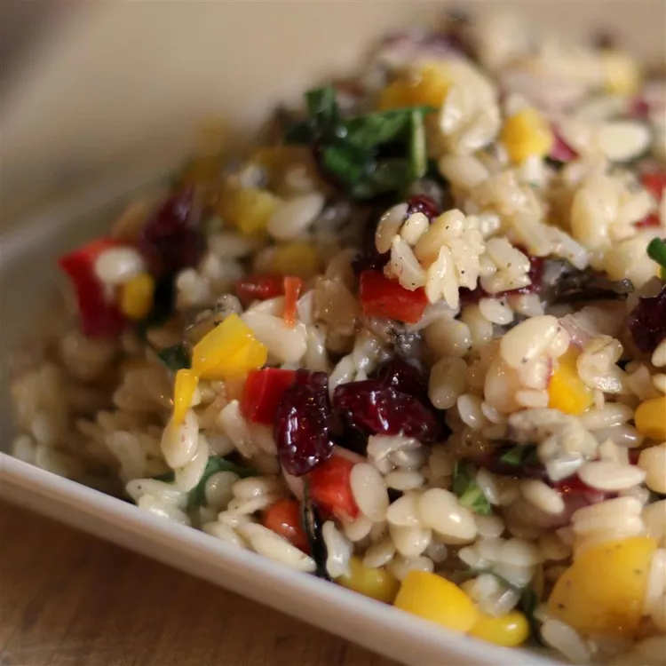

Orzo and Wild Rice Salad
Ingredients
- ½ cup wild rice
- 2 cups water
- 1 cup orzo pasta
- 3 tablespoons chopped red onion
- 3 tablespoons dried currants
- 2 tablespoons corn kernels, drained
- 3 tablespoons diced yellow bell pepper
- 3 tablespoons diced red bell pepper
- 3 tablespoons diced green bell pepper
- 2 tablespoons chopped fresh basil
- ½ teaspoon salt
- ½ teaspoon ground black pepper
- 2 tablespoons white balsamic vinegar
- 1 ½ tablespoons honey
- ¾ teaspoon Dijon mustard
- ¼ teaspoon minced garlic
- ⅛ teaspoon pepper
- 1 ½ teaspoons chopped fresh basil
- ¼ cup canola oil
- ¼ cup extra-virgin olive oil
Steps
- Bring the wild rice and water to a boil in a saucepan. Reduce heat to medium-low, cover, and simmer until the rice is tender but not mushy, 20 to 45 minutes depending on the variety of wild rice. Drain off any excess liquid, fluff the rice with a fork, and cook uncovered 5 minutes more. Once finished, spread into a shallow dish, and refrigerate until cold.
- Bring a large pot of lightly salted water to a boil. Add the orzo pasta, and cook until al dente, 7 to 8 minute. Drain, rinse with cold water, and chill.
- Place the chilled rice and orzo into a large mixing bowl. Stir in the red onion, currants, corn, yellow bell pepper, red bell pepper, and green bell pepper. Season with 2 tablespoons basil, salt, and 1/2 teaspoon pepper. In a separate bowl, whisk together the vinegar, honey, mustard, garlic, 1/8 teaspoon pepper, and 1 1/2 teaspoons basil. Slowly whisk in the canola and olive oils until emulsified. Stir the dressing into the pasta, and refrigerate 2 hours before serving.